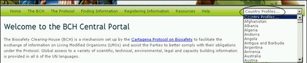

URL: http://bch.cbd.int/
En todas las páginas del CIISB se proporciona una herramienta de búsqueda rápida para obtener los perfiles de país. El enlace está ubicado al lado derecho en la barra de navegación. El menú que se despliega en este enlace permite seleccionar un país y obtener todos los registros que ese país ha introducido dentro del CIISB.

Los Perfiles de Países contienen información y el estado de cada país del siguiente modo: el País; la Fecha de la firma; Fecha de ratificación; Fecha de entrada en vigor; Revisión del Perfil; Estado del perfil y Última actualización del perfil. Se proporciona una lista con el tipo de documentos registrados (por ejemplo, Punto Focal Nacional, Ley, Reglamentaciones guía, evaluación de riesgos, etc.) con enlaces para acceder a dichos registros. Se despliega el número de registro para cada tipo de documento, así como la fecha de la última actualización.